HOME.
ポートフォリオ。
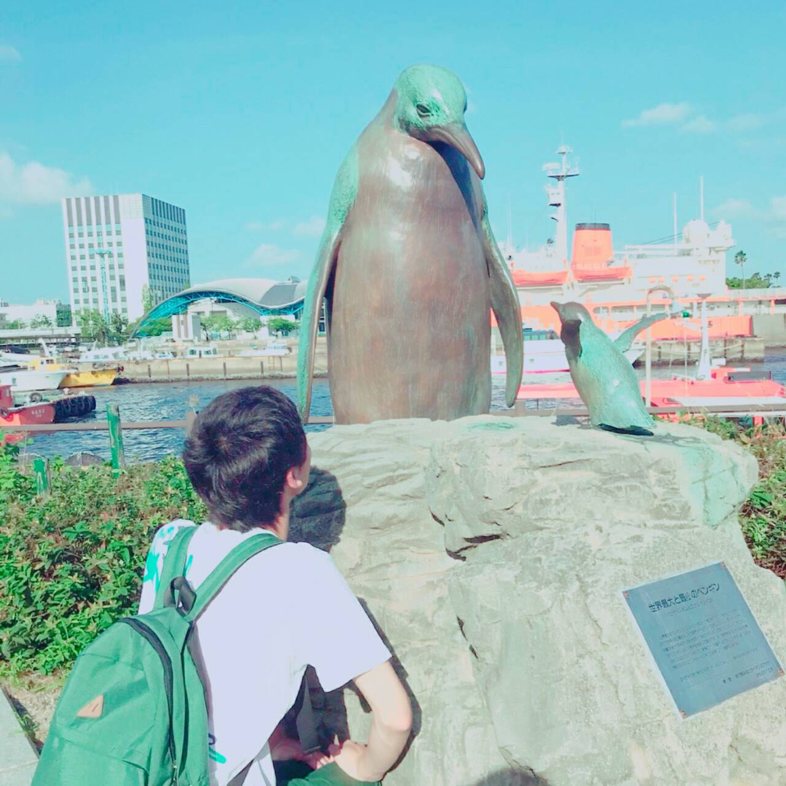
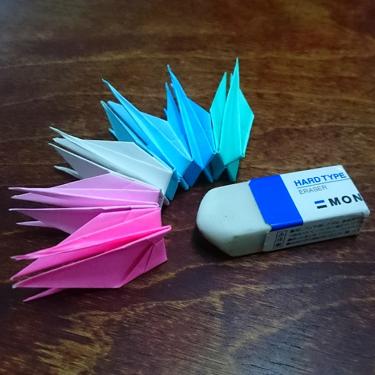
Portfolio?
HOME.
ポートフォリオ。
Portfolio?
夏生まれ。
岐阜出身。
山と川がある。
海がない。
パズルが好き。
ペンギンが好き。
ラーメンが好き。
カードゲームが好き。
プログラミングが好き。
篠田 祥
名古屋市立大学
芸術工学部
情報環境デザイン学科
芸工ネーム：しゃくり
UNITYを学びたい。
スペインに行きたい。
幸せに暮らしたい。
よく寝たい。
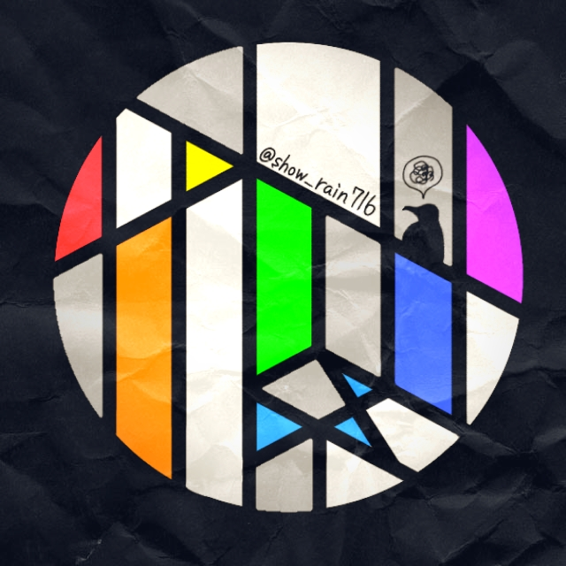
WORKS.
Work1.
2018/08
「ToDoCapsule」
Learned Skills.
html,css
javascript(jquery)
Ruby on Rails
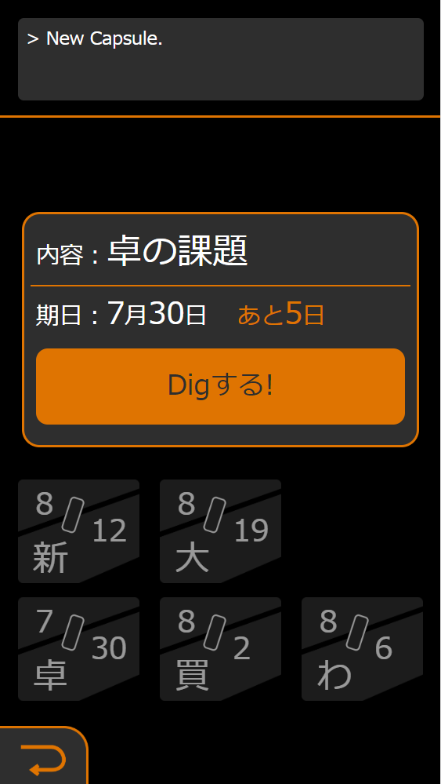
学事イベント、
「卓展2018」
にて制作。
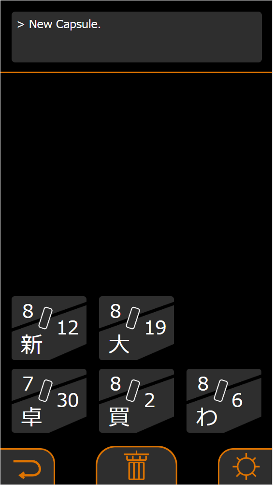
タイムカプセルをテーマに、
過去の自分からの伝言を
タスク終了と共に受け取れる
タスク管理アプリを制作した。
Work2.
2019/04
「OritorSite2019」
Learned Skills.
html,css
javascript(jquery)
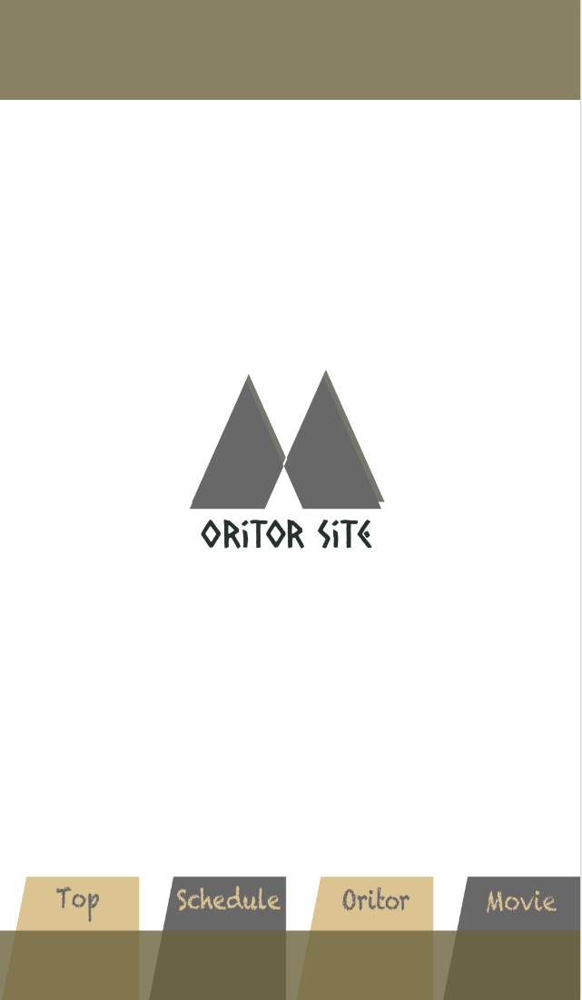
新入生歓迎活動の
一環として制作。
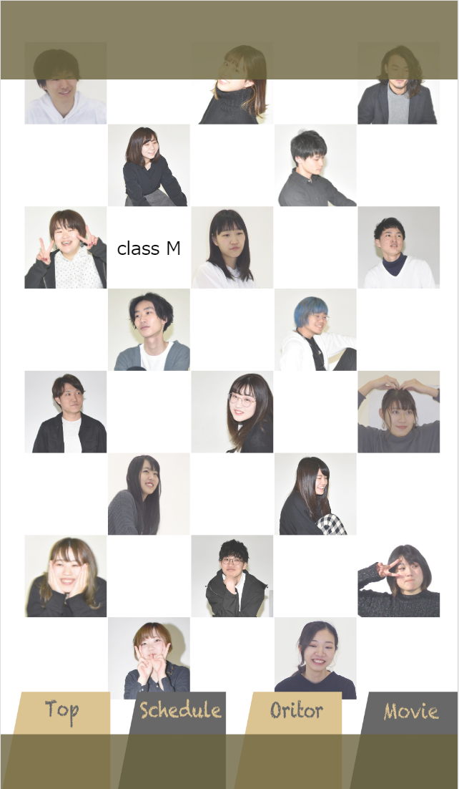
新入生に向けた、大学を
紹介するウェブサイトの
制作において、コーディングを
担当した。
Work3.
2019/05
「CircleNews」
Learned Skills.
html,css
javascript(jquery)
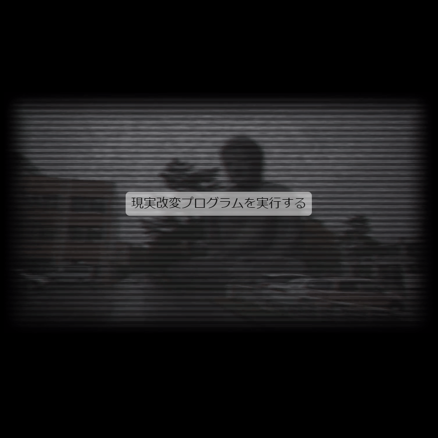
「あり得たかもしれない現実」
をテーマに、ありきたりの
Webメディアに似せた記事の
不気味さ、危うさ、暴走を、
動的なWebサイトを制作し
表現した。
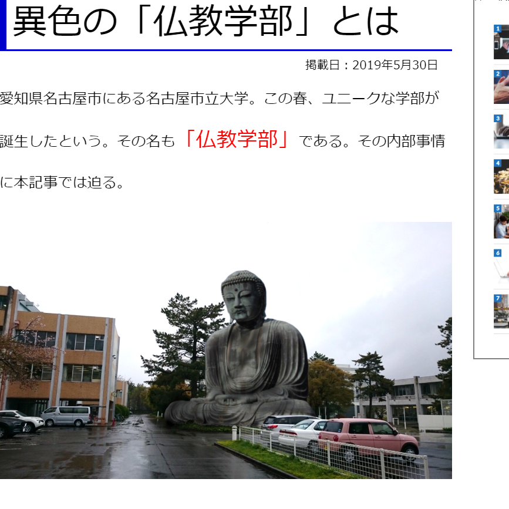
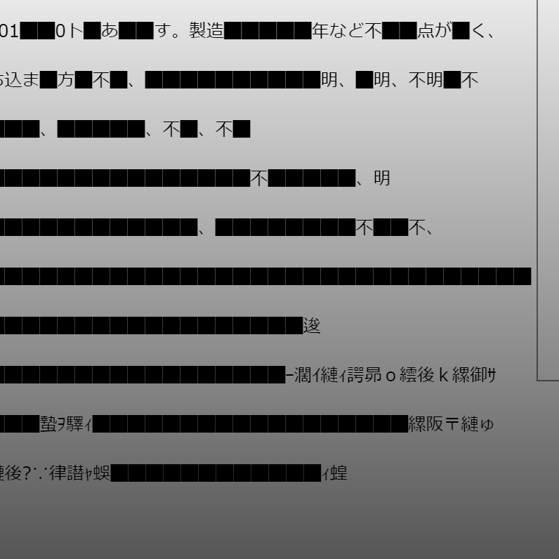
メディア表現の
実習作品として制作。
Work4.
2019/07
「Cakell」
Learned Skills.
Illustrator
Photoshop
UIデザインの
実習作品として制作。
「まもる」をテーマにした、
UIデザインの制作において、
モーニングコールをモチーフに
通話・アラームのサービスを
企画、提案した。
like1
プログラミングが好き。
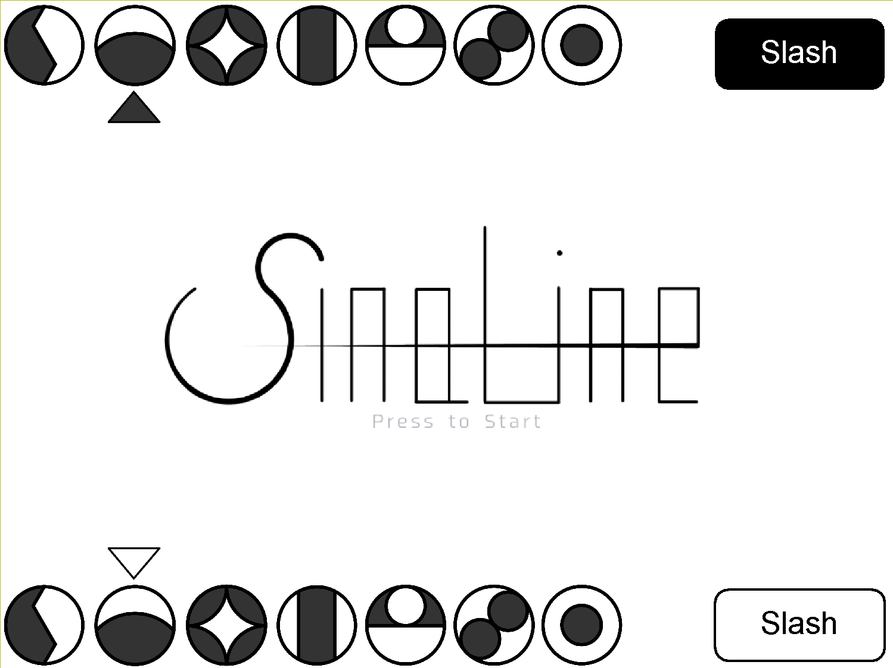
好き(得意とは言ってない)。
左画像は授業で制作したゲーム。
Unity勉強して何か制作したい。
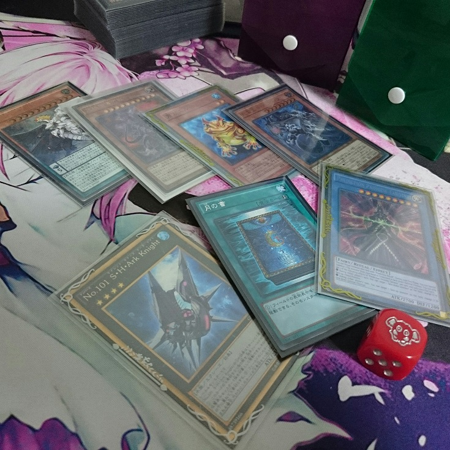
like2
カードゲームが好き。
カードゲームに限らず、
アナログゲーム全般好き。
かれこれ遊戯王とは16年くらい
付き合っている気がする。
大会によく出没します。
like3
ラーメンが好き。
この前週6で食べた(反省・no後悔)
右画像は「徳川町 如水」さん。
芸工から近いし美味いしなので
ぜひ行ってください。今夜にでも。
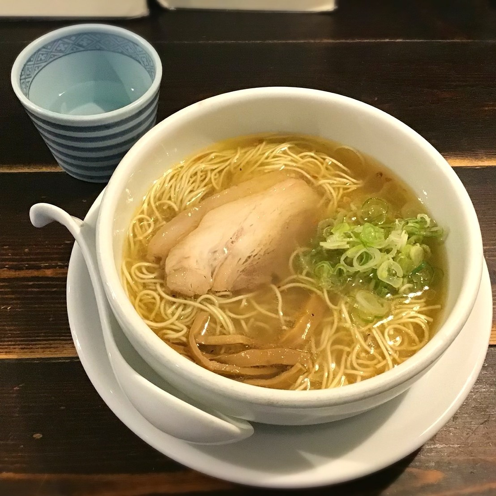
like4
ペンギンが好き。
特に皇帝ペンギンが好み。
名古屋港水族館にはコウテイがいますが結構レアで、日本でコウテイに会えるのは名古屋港水族館と和歌山のアドベンチャーワールドの2か所のみなのです(早口)。拝もう。
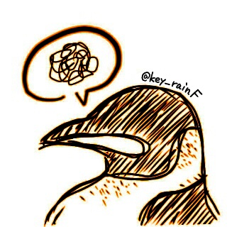
家には大量の知恵の輪と、
ルービックキューブなどあります。
このサイトのモチーフもルービックキューブです(伝われ)。
このサイトも実は若干パズルになってるので、暇な方はこの手前に見えてる1面の色を揃えてみてね。
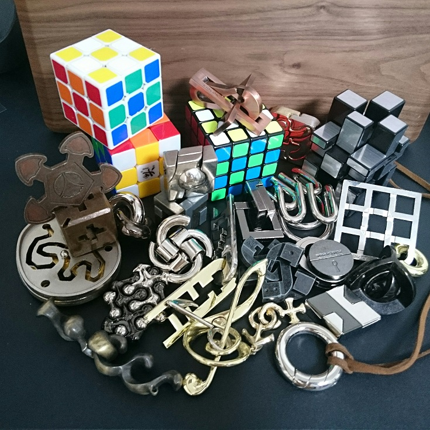
like5
パズルが好き。
Congratulations.